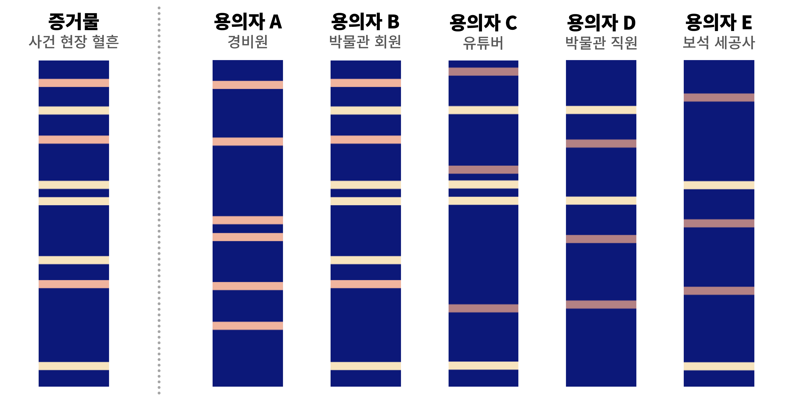
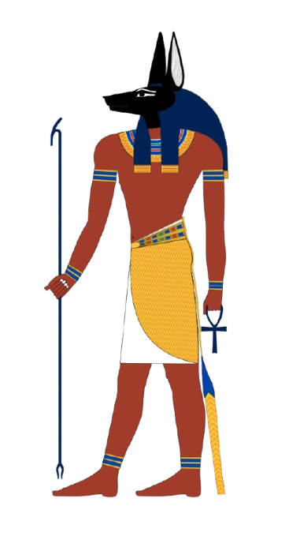
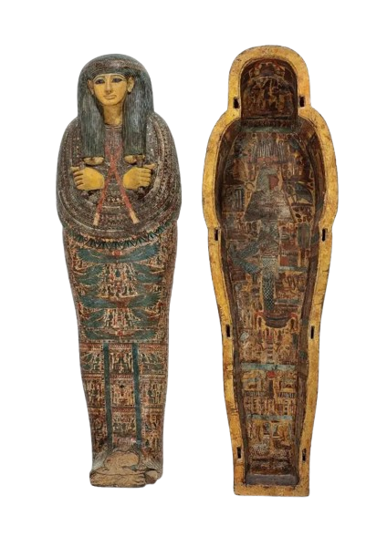
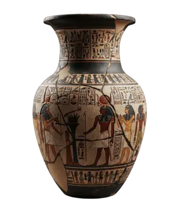

박물관 보석 도난 사건을 해결하라!
주어진 증거를 분석하여 범인과 사라진 보석의 행방을 밝혀내세요!
① 과학수사관의 첫 번째 능력, 관찰력(4문제)
사건 현장을 주의 깊게 관찰하고 물음에 답해보세요. 4문제를 전부 맞혀야 과학수사대원증을 만들 수 있습니다! 틀려도 괜찮아요 — 다시 도전할 수 있어요.
과학수사대원증
정보·아바타·사진을 골라 과학수사대원증을 만들고, PNG로 저장해 패들렛에 올려요!
① 카드 색상 테마
② 아바타 — 이모지 고르기
③ 아바타 — 셀카 / 사진 쓰기
④ 저장 & 공유
1) 정보 입력 → 2) 아바타/사진 선택 → 3) 💾 PNG로 저장 → 4) 패들렛에서 + 게시물 → 저장한 그림 첨부 → 게시!
③ 사건 해결하기
현장에서 수집된 증거를 분석하여 범인을 특정하고 사라진 보석의 위치를 밝혀내세요!
박물관 내부를 조사하다 혈흔처럼 보이는 얼룩이 묻은 티셔츠 3장을 찾아냈습니다. 눈으로는 얼룩이 구별되지 않습니다. 루미놀 시약을 뿌렸을 때 혈흔과 반응(청백색의 발광)을 일으키는 티셔츠를 찾아내세요!
창문 근처 흙밭에 찍혀진 범인의 발자국 길이를 실측한 결과 약 268mm였습니다. 발 길이와 실제 신장의 상관관계를 다루는 머신러닝 기법인 선형회귀 공식을 분석하여 범인의 예상 키를 계산하세요.
👉 CODAP 실습
① 위 CODAP 실습 사이트에서 발 길이-키 표본 데이터를 직접 분석하여 나만의 일차함수(선형회귀식) y = ax + b를 구하세요.
② 직접 구한 식에 범인의 발 길이인 268mm를 대입하여 예상 키를 계산하세요.
③ 계산된 예상 키 값을 아래 입력창에 입력하세요.
🔍 이 결과로 의심되는 용의자는?
경비원
박물관 회원
유튜버
박물관 직원
보석 세공사
증거 혈흔에서 추출한 DNA와 용의자의 STR 분석 결과를 비교하여 일치 여부를 확인하세요.

🔍 이 결과로 최종 판명된 박물관 도난 사건의 범인은 누구인가요?
경비원
박물관 회원
유튜버
박물관 직원
보석 세공사
범인은 보석을 숨긴 후 위치를 잊지 않기 위해 암호를 사용하여 적어 두었습니다. 암호를 해독하여 장소(영문 대문자 5글자)를 알아내세요!
📦 단서가 가리키는 것을 다음의 사진 중에서 클릭하여 Hope Diamond를 회수하세요! 보석을 찾으면 ④ 과학수사관 어때? 탭의 잠금이 최종 해제됩니다.

💨 비어있음


💨 비어있음
④ 과학수사관 어때?
과학수사관이라는 진로에 관해 탐구해봅시다!
- 중∙ 고등학교 : 과학과 수학을 열심히 공부해요.
- 대학교 : 일부 대학에 과학수사와 관련된 학과가 개설되어 있어요. 과학·공학 관련 분야를 전공하면 이 분야에 지원하기 수월해요.
- 취업 : 국립과학수사연구원이나 경찰과학수사대 등에서 활약할 수 있어요.
- 관찰력 : 작은 단서도 놓치지 않고 발견하는 능력
- 분석력 : 증거를 바탕으로 사실을 추론하는 능력
- 책임감 : 정확하고 공정하게 업무를 수행하는 태도
- 문제 해결력 : 다양한 정보를 종합해 사건을 해결하는 능력
- 의사소통 능력 : 조사 결과를 명확하게 설명하고 기록하는 능력
각 문항을 체크하고 아래 결과 버튼을 눌러 결과를 확인해봅시다!
1. 나는 작은 변화나 세부 사항을 잘 발견하는 편이다.
2. 문제의 원인이나 결과를 논리적으로 생각하는 것을 좋아한다.
3. 어려운 일이 있어도 끝까지 해결하려고 노력한다.
4. 과학 실험이나 탐구 활동에 관심이 있다.
본 프로그램의 활동 내용을 취합하여 A4 용지 규격 1장의 보고서를 출력하고 PDF로 다운로드할 수 있습니다.